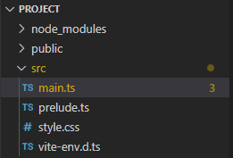

Zusammenfassung Typescript
Typescript ist eine Sprache, welche von Microsoft entwickelt wurde, um die Arbeit mit Javascript zu vereinfachen und Javascript um Datentypenannotationen erweitert. Die Sprache wird, um sie für Browser verständlich zu machen, in Javascript umgewandelt.
Grundlegende Konzepte und Syntax
1. Variablen
Ähnlich zur Mathematik lässt sich einer Variablen ein Wert zuweisen. Variablen können verschiedene Arten von Werten darstellen, diese Arten von Variablen werden Typen genannt. Javascript stellt bereits eingebaute Typen zur Verfügung. Einige der wichtigsten Typen sind in der folgenden Tabelle aufgelistet.
| Typ | Beschreibung |
|---|---|
string | beliebiger Text |
number | Dezimalzahl |
boolean | Wahrheitswert true oder false |
// Variablen werden in Typescript meistens mit `let` und einem Namen deklariert:
let name: string = "Hans";
let wohnort: string = "Deutschland";
let alter: number = 25;
let abiturschnitt: number = 2.8;
// der Typ der Variablen kann in den meisten Fällen von der Sprache bestimmt werden
// und muss nicht angegeben werden
let verheiratet = false; // type: boolean
// nachdem eine Variable mit let deklariert wurde, kann ihr ein neuer Wert mit
// <name> = <wert> zugewiesen werden
alter = 26;
// da Befehle in Javascript und vielen anderen Sprachen
// von oben nach unten ausgeführt werden, beträgt der Wert der Variablen
// `alter` ab der Deklaration in der ersten Zeile `25`
// und ab dem Zuweisen des neuen Alters `26`
// Variablen können, wie in der Mathematik, in Rechenoperationen verwendet werden
// in Javascript werden für die grundlegenden Operationen
// die Zeichen `+`, `-`, `*`, `/` verwendet:
let jahreErwachsen = alter - 18; // => 7
let restlicheLebenserwartung = 78.5 - alter; // => 53.5
// zu den Rechenoperationen können Werte verglichen werden
// für die Vergleiche können folgende Operatoren genutzt werden
// `>`: ist größer als
// `<`: ist kleiner als
// `>=`: ist größer oder gleich
// `<=`: ist kleiner oder gleich
// `===`: ist gleich
// `!==`: ist ungleich
// diese Vergleiche liefern einen `boolean`, je nachdem ob die Aussage
// wahr (true) oder falsch (false) ist
let kannMedizinStudieren = abiturschnitt < 1.2; // => false
// strings können ebenfalls verglichen werden, allerdings nur
// mit `===` und `!==`
let heisstPeter = name === "Peter"; // => false
// um mehrere Kriterien zu überprüfen, können
// `a && b` als a und b treffen zu
// und `a || b` als a oder b treffen zu verwendet werden
let darfAlkoholKaufen = (wohnort === "Deutschland" && alter >= 16)
|| (wohnort === "Amerika" && alter >= 21); // => true
// tldr: Variablen können Werte besitzen
// und in Rechnungen und Vergleichen verwendet werden
2. Kommentare
Kommentare erlauben es, dem Code Zusatzinformationen anzufügen, die das Geschriebene erklären, allerdings nicht ausgeführt werden.
Kommentare beginnen mit // und nehmen den Rest einer Zeile ein
// das ist ein Kommentar
let test = 123; // das ist auch ein Kommentar
3. Funktionen
Funktionen können, wie in der Mathematik, Parameter annehmen und einen Wert produzieren.
Eine Javascript Funktion wird wie der restliche Code von oben nach unten ausgeführt.
Funktionen werden in Javascript mit function und einem Namen deklariert.
Die Eingabetypen der Funktion müssen im Gegesatz zu Variablentypen angegeben werden.
// Eine Funktion mit dem Namen `f` welche eine Zahl quadriert
function f(x: number): number {
// `return` bestimmt den Rückgabewert der Funktion
// und bricht die Ausführung der Funktion ab
return x * x;
console.log("das hier wird niemals ausgeführt");
}
// eine Funktion kann, wie in der Mathematik,
// mit <name>(...<argumente>) aufgerufen werden
let a = f(2); // => 4
Javascript selbst bietet auch eingebaute Funktionen. Einige davon sind im Folgenden aufgelistet.
// gibt `Hallo!` und die Zahl 123 auf die Browserkonsole aus
console.log("Hallo!", 123);
// liefert die Wurzel aus der Eingabezahl
let laenge = Math.sqrt(3*3 + 4*4); // => 5
// Math beinhaltet auch weitere mathematische Funktionen wie sin, cos, ...
4. Konditionale Ausführung (If / Else)
Mithilfe von if und else Blöcken kann je nach dem, welche Bedingungen zutreffen,
unterschiedlicher Code ausgeführt werden.
let uhrzeitStunden = 13;
if(uhrzeitStunden > 12) {
// da `uhrzeitStunden > 12` zutrifft, wird diese Zeile ausgeführt
console.log("nachmittag");
} else {
// diese Zeile wird übersprungen
console.log("vormittag");
}
5. Wiederholte Ausführung (Schleifen)
while und for Schleifen erlauben es, in Javascript Code variabel oft
zu wiederholen ohne diesen mehrfach schreiben zu müssen.
// `while` Schleife
// => prüft vor jedem Durchlauf, ob der Ausdruck in den Klammern === true ist
// diese Schleife wird unendlich lange ausgeführt
while(true) {
console.log("Hallo!");
}
// `for` Schleife
// => startet mit i = 0 (let i = 0)
// prüft vor jedem Durchlauf, ob i < 10 ist (i < 10)
// erhöht i bei jedem Durchlauf um 1 (i++ kurz für i = i + 1)
for(let i = 0; i < 10; i++) {
console.log("Hallo! - " + i);
}
6. Listen (Arrays)
Listen können beliebig viele Elemente von einem Typen enthalten.
let rucksackInhalt = ["Powerbank", "Laptop", "Flammenwerfer"]; // type: string[]
// ein Element kann aus einer Liste extrahiert werden,
// indem in eckigen Klammern der Index eines Elements angegeben wird;
// ! der index einer Liste startet bei 0 !
let ersterGegenstand = rucksackInhalt[0]; // => "Powerbank"
// Elemente einer Liste können auch modifiziert werden
rucksackInhalt[1] = "Tablet";
// rucksackInhalt => ["Powerbank", "Tablet", "Flammenwerfer"]
// die Methode `push` fügt dem Array ein Element `Ladekabel` am Ende hinzu
rucksackInhalt.push("Ladekabel");
// rucksackInhalt => ["Powerbank", "Laptop", "Flammenwerfer", "Ladekabel"]
// mit einer `for` Schleife können alle Elemente einer Liste durchlaufen werden
for(let i = 0; i < rucksackInhalt.length; i++) {
console.log((i + 1) + ". Gegenstand: " + rucksackInhalt[i]);
}
7. Klassen
Eine Klasse kombiniert Daten mit Funktionalität.
// Klassen können mit `class` und einem Namen deklariert werden
class Schueler {
// die "Felder" einer Klasse beschreiben die Daten
// die mit jedem Objekt verbunden sind
name: string;
geburtsjahr: number;
notendurchschnitt: number;
geschlecht: string;
// der Konstruktor ist eine besondere Methode welche die Daten
// eines Objekts der Klasse initialisiert
// ein Konstruktor wird mit `new` aufgerufen
constructor(
// der Konstruktor kann wie jede andere Methode Argumente akzeptieren
name: string, geburtsjahr: number,
notendurchschnitt: number, geschlecht: string,
) {
this.name = name;
this.geburtsjahr = geburtsjahr;
this.notendurchschnitt = notendurchschnitt;
this.geschlecht = geschlecht;
}
// Methoden einer Klasse funktionieren ähnlich wie gewöhnliche Funktionen
// allerdings kann mit `this` auf das aktuelle Objekt
// und somit auf die Daten von diesem Objekt zugegriffen werden
getAlter(jahr: number): number {
return jahr - this.geburtsjahr;
}
}
// mit `new` wird ein neues Objekt vom Typ `Schueler` erzeugt
// der Konstruktor erhält die Argumente in den Klammern
let marie = new Schueler("Marie", 2005, 2.3, "w");
// auf dem konstruierten Objekt können Methoden
// mit <obj>.<methode>() aufgerufen werden
let alter = marie.getAlter(2022);
// mit <obj>.<feldname> kann dazu direkt auf ein Feld
// eines Objekts zugegriffen werden
let name = marie.name;
.
Setup
Öffnen des Projekts
- Kopiere und entpacke die zur Verfügung gestellte Zip-Datei in einen beliebigen Ordner (wichtig: der Ordnername sollte keine Leerzeichen enthalten)
- Öffne den entpackten Ordner und führe
start.batmit einem Doppelklick aus - Nun sollten sich ein Konsolenfenster und ein Fenster des Programms
Visual Studio Code(VsCode) (im Falle einer Warnung siehe 1)- Das Konsolenfenster dient lediglich dem Anzeigen der Nachrichten des Webservers
- Visual Studio Code wird verwendet, um den Quelltext der Simulation zu bearbeiten
- Öffne anschließend die Datei
main.tsin VsCode, falls diese nicht bereits geöffnet ist  - Die Applikation lässt sich nun unter http://127.0.0.1:5173 öffnen
Grundstruktur des Programms
Der Inhalt von main.ts sollte wie folgt aussehen:
// import des Layouts der Seite
import "./style.css";
// import von allen benötigten Funktionen
import { Vec2 } from "@david.harwardt/math";
import {
Canvas2d, CanvasFullscreenPlugin, DrawLoop,
CanvasDraggablePlugin, CanvasInputManagerPlugin,
} from "@david.harwardt/canvas-2d";
// Code zum erzeugen der Canvas
// ...
// ----------------------------
// Zeichenfunktion der Szene
function draw() {
}
1Es besteht die Möglichkeit, dass ein Antivirenprogramm aufgrund einer Prozesserstellung oder dem gestarteten Webserver warnt, da, um die Entwicklung so einfach wie möglich zu gestalten, einige Prozesse, u.a. ein temporärer, lokaler Webserver automatisch erzeugt werden. Diese Warnung kann ignoriert werden oder alle benötigten Programme manuell installiert werden (Anleitung manuelle installation).
Erzeugen der Canvas
Code zum Erzeugen der Canvas
Die Canvas wird wie folgt erzeugt und direkt der Seite (document.body) hinzugefügt:
let canvas = Canvas2d.fromParent(document.body);
canvas.addPlugin(new CanvasFullscreenPlugin());
// Platz für weitere Plugins
// ...
// -------------------------
canvas.init();
Außerdem wird der Canvas ein CanvasFullscreenPlugin hinzugefügt, damit sie den vollen Raum des Browserfensters ausfüllt.
Nachdem alle Plugins hinzugefügt wurden, wird die Canvas mit init initialisiert.
Anschließend muss ein DrawLoop erzeugt und gestartet werden, welcher die draw Funktion zyklisch aufruft (ca. 60 mal pro Sekunde).
let loop = new DrawLoop(draw);
loop.start();
Der Code kann mit Ctrl-S gespeichert werden.
mit Ctrl / Cmd + Shift + i kann die Browserkonsole geöffnet werden welche später wichtig wird
Das Koordinatensystem
Im Gegensatz zu herkömmlichen Koordinatensystemen ist die Y-Achse der verwendeten Canvas invertiert und der Ursprung (also [0, 0]) liegt in der oberen, linken Ecke.
Die Koordinatensystem sieht also wie folgt aus:
|(0, 0) (w, 0)
-+--------------------------------------> x
|
| (100, 100)
| x---------+
| | |
| | |
| +---------+
|
| (300, 300)
| x
y |
V
(0, h)
Zeichnen von simplen Formen
Um Formen auf der Canvas zu zeichnen, muss dies in der draw Funktion stattfinden.
Damit die Canvas jeden Frame neu gezeichnet wird, muss zuerst die clear Methode der canvas aufgerufen werden,
gefolgt von canvas.beginDraw();.
Der Frame wird mit einem Aufruf von canvas.endDraw(); beendet.
Die gesamte draw Funktion sollte wie folgt aussehen:
function draw() {
canvas.clear();
canvas.beginDraw();
// alle Zeichenfunktionen werden hier aufgerufen
// ...
// ---------------------------------------------
canvas.endDraw();
}
Formen können nun mit den drawXXX Methoden der canvas gezeichnet werden.
Die Methoden benötigen Argumente, um die Form zu beschreiben (z.B. Kreis: Mittelpunkt und Radius).
Außerdem akzeptieren die Methoden ein letztes Argument um visuelle Eigenschaften der Form zu ändern
die Formen besitzen allerdings bereits Standardwerte für ihr Aussehen.
| Form | Methode | Argumente | Style-Argumente |
|---|---|---|---|
| Kreis | drawCircle | center: Vec2, radius: number | color: Color, ... |
| Rechteck | drawRect | pos: Vec2, dim: Vec2 | color: Color, ... |
| Linie | drawLine | start: Vec2, end: Vec2 | width: number, color: Color, ... |
| Text | drawText | text: string, pos: Vec2 | size: number, color: Color, ... |
Punkte und Vektoren lassen sich mit einem Vec2 beschreiben, welcher mit new Vec2(<x>, <y>) konstruiert werden kann.
Ein Kreis unter den Koordinaten (100, 100) mit einem Radius von 50 lässt sich also wie folgt zeichnen:
// innerhalb der `draw` Funktion
canvas.drawCircle(new Vec2(100, 100), 50);
// weitere Formen
// ein Rechteck mit einer Größe von 100x100 an der Position (100, 300)
canvas.drawRect(new Vec2(100, 300), new Vec2(100, 100));
// eine Linie von (100, 500) nach (200, 600)
canvas.drawLine(new Vec2(100, 500), new Vec2(200, 600));
// der Text "Hallo!" mit einer Schriftgröße von 25 unter (300, 100)
canvas.drawText("Hallo!", new Vec2(300, 100), { size: 25 });
Teste die Zeichenfunktionen am besten aus, um ein Gefühl für das Koordinatensystem zu bekommen.
Struktur des Körpers
Um einen Körper simulieren zu können, benötigt dieser alle, für die Simulation wichtigen Daten.
Eine Klasse (class) eignet sich, um diese Eigenschaften zu lagern.
Die Klasse benötigt auch Methoden, welche den Körper zeichnen [draw(canvas: Canvas2d)]
und die Position und Geschwindigkeit nach dem Newtonschen Gravitationsgesetz
mit jeweils einem anderen Körper ändern [update(body: GravBody)].
Eine weitere Methode sollte die update Methode für alle Körper in der Simulation ausführen [updateAll(bodies: GravBody[])].
Beispielklasse:
class GravBody {
pos: Vec2; // kurz für `position`
vel: Vec2; // kurz für `velocity`
mass: number;
constructor(pos: Vec2, vel: Vec2, mass: number) {
this.pos = pos;
this.vel = vel;
this.mass = mass;
}
draw(canvas: Canvas2d) {
// todo: Körper zeichnen
}
update(body: GravBody) {
// todo: einzelnen Körper simulieren
}
updateAll(bodies: GravBody[]) {
// todo: update für alle Körper (außer dem eigenen) aufrufen
}
}
Implementation des Körpers
Grundlegendes Prinzip
Da die Geschwindigkeit \(v\) eines Körpers die Änderung in seiner Position \(p\) beschreibt
und dasselbe für die Beschleunigung \(a\) und \(v\) gilt (\(a\) beschreibt die Änderungsrate von \(v\)),
wird in der Simulation jeden Frame in der update Methode eine Beschleunigung auf die Geschwindigkeit des Körpers addiert,
die Geschwindigkeit wiederum wird auf die Position addiert:
// in der `GravBody` Klasse
update(body: GravBody) {
// vorerst keine Beschleunigung
let acc = /* ? */ new Vec2(0, 0);
// in Javascript lassen sich nur Zahlen (number) mit dem `+` Operator addieren
// daher verwenden Vektoren eine `add` Methode wie hier dargestellt
// die restlichen Operationen können mit `sub`, `mult`, `div` verwendet werden
this.vel = this.vel.add(acc);
this.pos = this.pos.add(this.vel);
}
// ...
Zeichnen des Körpers
Um den Körper anzeigen zu können, wird er in der draw Methode gezeichnet.
Für die Darstellung kann eine beliebige Form gewählt werden, allerdings entspricht ein Kreis den zu simulierenden Objekten am ehesten:
// in der `GravBody` Klasse
draw(canvas: Canvas2d) {
// grobe Abschätzung des Radius anhand der Masse
let radius = Math.sqrt(this.mass);
canvas.drawCircle(this.pos, radius);
}
Darstellen der Körper
Mit dem grundlegenden Gerüst lassen sich die Körper bereits auf dem Bildschirm anzeigen und können sich gleichförmig bewegen. Um beispielhaft 2 Körper in der Simulation zu verwenden, kann die Simulation um das Folgende erweitert werden:
// direkt in `main.ts`
// unter Code zum Erzeugen der Canvas
let sun = new GravBody(new Vec2(500, 500), new Vec2(0, 0), 1000);
let earth = new GravBody(new Vec2(500, 300), new Vec2(2, 0), 20);
function draw() {
// ...canvas.beginDraw();
earth.update(sun);
earth.draw(canvas);
sun.draw(canvas);
canvas.endDraw();
// ... canvas.endDraw();
}
Wenn die Datei nun gespeichert wird, sollten ein großer und ein kleinerer Kreis, welcher sich nach rechts bewegt, auf dem Bildschirm zu erkennen sein. Der kleine Kreis bewegt sich noch geradeaus, da sein Geschwindigkeitsvektor gleich bleibt und nach rechts zeigt.
Implementation des Gravitationsgesetzes
Um die Position und Geschwindigkeit des Körpers simulieren zu können, muss also vorerst die, aus der Kraft resultierende Beschleunigung, unter Verwendung der folgenden Formeln berechnet werden. (die Formeln müssen nach \(a\) umgestellt werden und \(G = \gamma\))
\[ F = G \frac{m_1 m_2}{r^2} \] \[ F = m \cdot a \]
Lösung
\[ F = m_1 \cdot a \] Teilen durch \(m\)
\[ a = \frac{F}{m_1} \] Einsetzen von \(F\)
\[ a = \frac{G \frac{m_1 m_2}{r^2}}{m_1} \] Kürzen
\[ a = G \frac{m_1 m_2}{m_1 r^2} \] \[ \underline{\underline{a = G \frac{m_2}{r^2}}} \]
Die Gleichung kann wie folgt in Javascript implementiert werden:
update(body: GravBody) {
// Gravitationskonstante (fiktiver Wert)
let G = 1;
// Berechnen der Entfernung zwischen den Körpern
let r = this.pos.distance(body.pos);
// Richtung der Beschleunigung
// (Vektor, welcher in Richtung des anderen Körpers zeigt)
//
// +-------------------->
// | this other
// | x------>x
// | dir
// |
// V
let dir = body.pos.sub(this.pos);
// Betrag der Beschleunigung (ohne Richtung)
let absAcc = G * (body.mass / (r*r));
// kombinieren von Richtung und Betrag der Beschleunigung
let acc = dir.withLength(absAcc);
this.vel = this.vel.add(acc);
this.pos = this.pos.add(this.vel);
}
Wenn die Gleichung korrekt implementiert wurde, sollte die Erde in der Simulation um die Sonne kreisen.
Der Code der soweit fertigen Grundsimulation könnte wie folgt aussehen:
// import des Layouts der Seite
import "./style.css";
// import von allen benötigten Funktionen
import { Vec2 } from "@david.harwardt/math";
import {
Canvas2d, CanvasFullscreenPlugin, DrawLoop,
CanvasDraggablePlugin, CanvasInputManagerPlugin,
} from "@david.harwardt/canvas-2d";
let canvas = Canvas2d.fromParent(document.body);
canvas.addPlugin(new CanvasFullscreenPlugin());
canvas.init();
let loop = new DrawLoop(draw);
loop.start();
class GravBody {
pos: Vec2;
vel: Vec2;
mass: number;
constructor(pos: Vec2, vel: Vec2, mass: number) {
this.pos = pos;
this.vel = vel;
this.mass = mass;
}
draw(canvas: Canvas2d) {
let radius = Math.sqrt(this.mass);
canvas.drawCircle(this.pos, radius);
}
update(body: GravBody) {
let G = 1;
let r = this.pos.distance(body.pos);
let dir = body.pos.sub(this.pos);
let absAcc = G * (body.mass / (r*r));
let acc = dir.withLength(absAcc);
this.vel = this.vel.add(acc);
this.pos = this.pos.add(this.vel);
}
updateAll(bodies: GravBody[]) {
}
}
let sun = new GravBody(new Vec2(500, 500), new Vec2(0, 0), 1000);
let earth = new GravBody(new Vec2(500, 300), new Vec2(2, 0), 20);
// Zeichenfunktion der Szene
function draw() {
canvas.clear();
canvas.beginDraw();
earth.update(sun);
earth.draw(canvas);
sun.draw(canvas);
canvas.endDraw();
}
Alle weitern Schritte dienen der Erweiterung der, nun fertigen, Grundsimulation.
Simulation von mehreren Körpern
Um mehrere Körper simulieren zu können benötigen wir eine Liste (Array) aus Körpern.
Das bedeutet wir wandeln die seperaten Deklarationen von sun und earth in eine Liste bodies um.
// let sun = new GravBody(new Vec2(500, 500), new Vec2(0, 0), 1000);
// let earth = new GravBody(new Vec2(500, 300), new Vec2(1, 0), 20);
// umgewandelt zu =>
let bodies = [
new GravBody(new Vec2(500, 500), new Vec2(0, 0), 1000), // sun
new GravBody(new Vec2(500, 300), new Vec2(2, 0), 20), // earth
];
In diese Liste können nun beliebig viele weitere Körper hinzugefügt werden.
Damit nun alle Körper der Liste geupdated werden muss die Liste in der draw Funktion
mit einer for Schleife durchlaufen werden. Das Durchlaufen ersetzt die einzelnen draw und update Aufrufe.
// innerhalb der `draw` Funktion
// ...canvas.beginDraw();
for(let i = 0; i < bodies.length; i++) {
bodies[i].draw(canvas);
bodies[i].updateAll(bodies);
}
// ...canvas.endDraw();
Zuletzt muss noch die updateAll Methode der GravBody Klasse implementiert werden:
updateAll(bodies: GravBody[]) {
// durchlaufen aller Körper
for(let i = 0; i < bodies.length; i++) {
// Check ob anderer Körper unterschiedlich ist
if(bodies[i] !== this) {
// Aufruf der eigenen `update` mit dem anderen Körper
this.update(bodies[i]);
}
}
}
Kamerasteuerung (Zoom)
Um in größeren Simulationen einen besseren überblick behalten zu können empfiehlt sich die Fähigkeit, die Kamera bewegen und zoomen zu können. Dies lässt sich durch 2 Plugins der Kamera realisieren:
// ... let canvas =
canvas.addPlugin(new CanvasInputManagerPlugin());
canvas.addPlugin(new CanvasDraggablePlugin());
// restliche Plugins
Nun sollte sich die Kamera mit der Maus bewegen und mit dem Mausrad zoomen lassen.
Statische Körper
Der Zentralkörper soll in den Meisten Fällen das Zentrum des Systems bleiben,
da die Simulation allerdings auf alle Körper angewannd wird sind Kleine Bewegungen
nicht zu vermeiden.
Um dieses Problem zu lösen kann dem Körper eine Eigenschaft isStatic zugewiesen werden
welche die Krafteinwirkungen auf den eigenen Körper vollständig deaktiviert.
Dies kann wie folgt umgesetzt werden:
class GravBody {
// weiteres Feld der Klasse `GravBody`:
isStatic: boolean;
// Ergänzung des Konstruktors:
constructor(/* Argumente */, isStatic: boolean = false) {
this.isStatic = isStatic;
// restlicher Konstruktor
}
update(body: GravBody) {
// Abbruch der Simulation falls der Körper statisch ist
if(this.isStatic) { return; }
// ... Rest der `update` Methode
}
}
Zeitskalierung
In der grundlegenden Implementation ist die Simulation an die Framerate (Bildwiederholungsrate, meistens 60fps) des Browsers gebunden,
has heißt wenn sich die Framerate ändert wird die Simulation schneller oder langsamer.
Um die Simulation von der Framerate unabhängig zu machen kann die gesamte Simulation um das Zeitdelta dt zwischen den Frames skaliert (multipliziert) werden.
// in GravBody
// die `update` Methoden erhalten ein zusätzliches Argument `dt`
update(body: GravBody, dt: number) {
// ...berechnung `acc`
// die Werte von `acc` und `vel` werden entsprechend der Zeit skaliert
// indem diese mit `dt` multipliziert werden
this.vel = this.vel.add(acc.multS(dt));
this.pos = this.pos.add(this.vel.multS(dt));
}
updateAll(bodies: GravBody[], dt: number) {
// for...
// `dt` wird an die einzelnen `update` Methoden weitergegeben
this.update(bodies[i], dt);
// ...
}
// direkt in `main.ts` in der `draw` Funktion
// die `draw` Funktion erhält automatisch einen Wert für `dt`
// (in Millisekunden) als ersten Parameter
function draw(dt: number) {
// ...
// Umwandlung von `dt` in Sekunden
let dtSeconds = dt / 1000;
for(let i = 0; i < bodies.length; i++) {
bodies[i].draw(canvas);
bodies[i].updateAll(bodies, dtSeconds);
}
}
Aufgrund der Skalierung kann die Bewegung der Körper langsamer oder schneller geworden sein. Die Geschwindigkeit (der Geschwindigkeitsvektor) der Körper kann angepasst werden falls dies der Fall ist.
Manuelle installation (optional)
- Gehe auf https://nodejs.org und lade den Installer für
Node.jsherunter - Gehe auf https://code.visualstudio.com und lade den Installer für
Visual Studio Codeherunter - Installiere die heruntergeladenen Programme
- Nun muss nur noch
Visual Studio Codeund derprojectOrdner aus der Zip-Datei inVisual Studio Codegeöffnet werden
Um die Applikation zu starten müssen der folgende Befehl in einem Terminal ausgeführt werden:
npm run dev
Das Terminal kann in Visual Studio Code wie folgt geöffnet werden:
Ctrl / Cmd + Shift + P- Eingabe:
terminal Enter